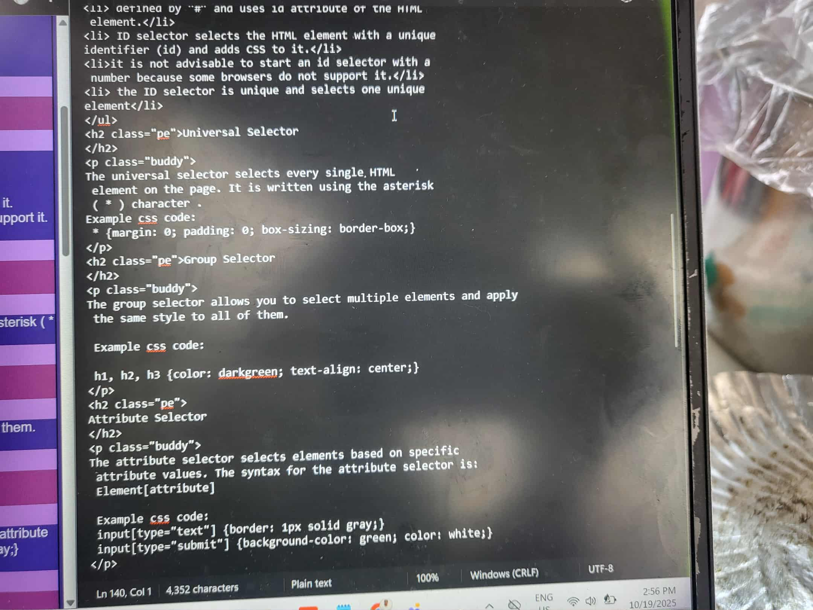
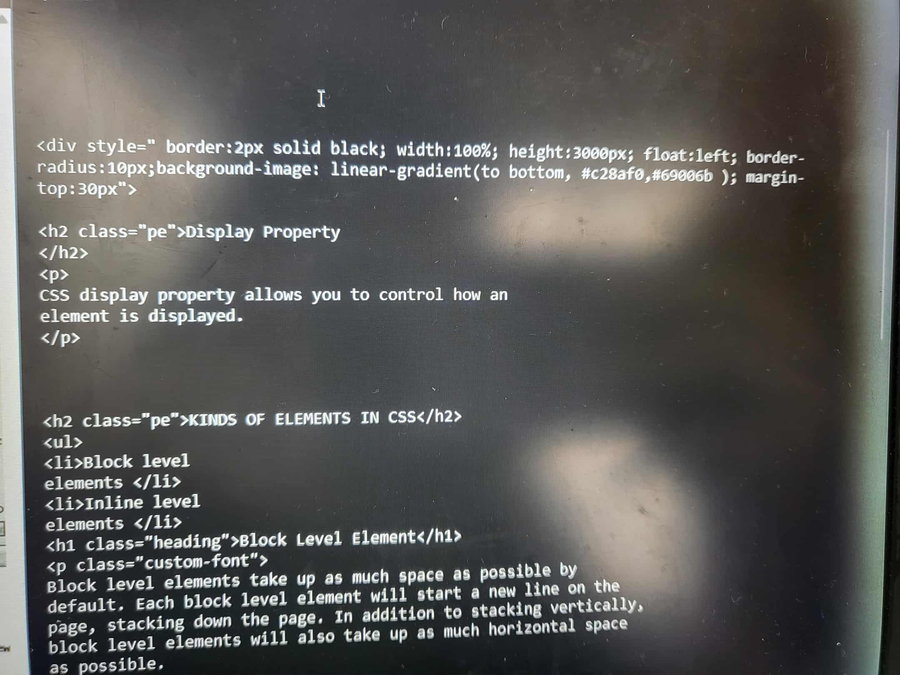

CSS selectors are used to “find” or “select” the HTML
elements that you want to style.
CSS selectors are divided into 6 types:
1. Class selector
2. Element selector or Tag selector
3. ID selector
4. Universal selector
5. Group selector
6. Attribute selector
The universal selector selects every single HTML element on the page. It is written using the asterisk ( * ) character . Example css code: * {margin: 0; padding: 0; box-sizing: border-box;}
The group selector allows you to select multiple elements and apply the same style to all of them. Example css code: h1, h2, h3 {color: darkgreen; text-align: center;}
The attribute selector selects elements based on specific attribute values. The syntax for the attribute selector is: Element[attribute] Example css code: input[type="text"] {border: 1px solid gray;} input[type="submit"] {background-color: green; color: white;}
Use a class selector when you want to apply the same style to multiple elements or when elements share a common category or purpose. Use class when styling many elements that share the same style — even if they have different tags.
Use an ID selector when styling a unique element that appears only once on a page (like a header, footer, or main section).
Use an element selector to style all occurrences of a specific HTML tag.
Use the universal selector when you want to style all elements on the page — for example, to reset margins, padding, or box-sizing.
Use a group selector when different elements share the same styling — to avoid repeating code.
Use an attribute selector when you want to style elements based on their HTML attributes or attribute
 I’ve learned that CSS selectors are used to target specific HTML elements so we can apply styles to them. They help control which parts of a webpage are affected by certain designs, such as text color, layout, or background. There are different types of selectors like class, ID, and element selectors, each serving a different purpose. Understanding selectors made me realize how important accuracy is in styling because choosing the right selector helps make a webpage organized, consistent, and easier to manage.